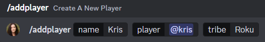
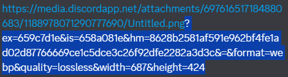
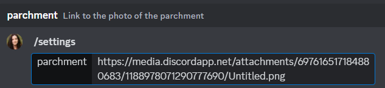
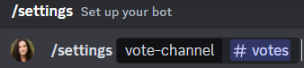
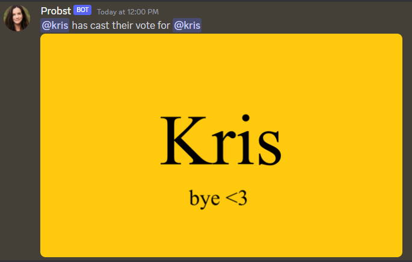

Setting up Probst
Players
Adding a player
To add a player, use /addplayer with their name, user and tribe.

Adding @kris, with the name 'Kris' in the Roku tribe
Viewing players
Use /listplayers followed by the tribe to view all players in a tribe.
/listplayers all will list all players, sorted by tribe.
Removing players
Use /removeplayers followed by the @user you would like to remove to remove a player.
This will automatically remove them from all of their alliance channels, and send a 'Player Removed' message in each. If there is only one person remaining in the alliance channel after they are removed, an 'Alliance Archived' message will be sent and the alliance will be locked.
Tribes
Swapping tribes
To swap the tribe of a player, you can use /swaptribe, followed by their @user and new tribe.
If you want to swap an entire tribe into a new tribe (for a merge, for example), you can use /swapalltribe, with the tribe you want players to be swapped from and the new tribe you want players to be swapped into.
Voting
Setting parchment photo
Probst allows for players to use a command to cast votes.
To set this up, you must use the /settings command.
To set your parchment image, send the image into discord, right click and press 'copy image link'. Delete everything past the question mark.

Remove everything highlighted in blue
Use /settings, select parchment and send the rest of the link to set it as your parchment photo.

Setting voting channel
The voting channel is the channel where votes submitted by players will be collected as they come in. Make sure this is a channel players cannot see.
Use /settings, select vote-channel and select a channel for votes to be collected.

Votes will appear in the channel as they come in like this.
